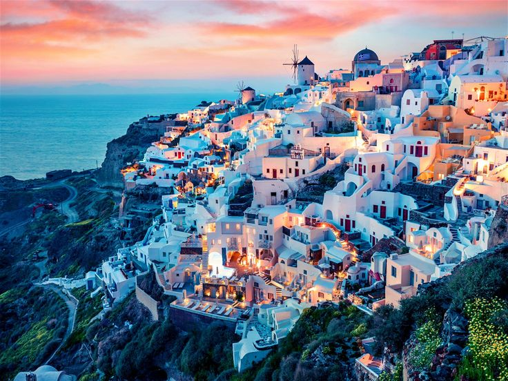
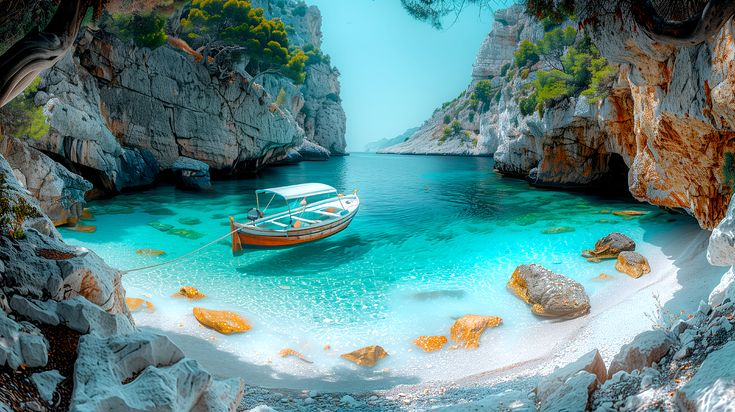

Greece is where history and myth converge under an endless sapphire sky. From the
colossal marble ruins of Athens to the whitewashed dreams of the Cyclades, this is a land that taught the world
the meaning of harmony and beauty. Whether you seek the intellectual depth of ancient philosophy or the simple
perfection of a Mediterranean sunset, Greece offers a timeless sanctuary for the wandering soul.
1. The Acropolis: Athens' Sacred Rock

Crowning the city of Athens, the Acropolis and its most famous temple, the Parthenon,
represent the absolute pinnacle of classical Greek architecture and the birthplace of Western democracy.
Built in the 5th century BC during the Golden Age of Pericles, these sacred marble structures were dedicated
to the goddess Athena, the protector of the city. Walking up the marble steps of the Propylaea feels like a
journey back to the height of ancient civilization, where every column and frieze tells a story of gods,
heroes, and the dawn of philosophy. The Acropolis is not just an archaeological site; it is a profound
symbol of the human spirit's capacity for harmony, balance, and intellectual pursuit. From its heights, the
sprawl of modern Athens stretches to the sea, offering a breathtaking contrast between the eternal past and
the vibrant present.
2. Santorini: The Island of Radiant Light

Santorini is perhaps the most visually arresting island in the world, a crescent-shaped
masterpiece forged by a massive volcanic eruption thousands of years ago. Known as 'Thira' in Greek, the
island is characterized by its stark white villages, such as Oia and Fira, which cling precariously to the
steep cliffs of the caldera. The contrast between the blinding white architecture, the deep sapphire blue of
the domes, and the shimmering turquoise of the Aegean Sea below is a sensory experience of pure radiance.
Beyond its famous sunsets, Santorini offers unique volcanic beaches with black, red, and white sands, as
well as the prehistoric ruins of Akrotiri, a city frozen in volcanic ash. It is a place of ethereal beauty,
where the light seems to glow from within the stones themselves, creating a romantic atmosphere that has
captivated travelers for generations.
3. Meteora: The Monasteries in the Sky

In the heart of mainland Greece, the rock pillars of Meteora rise like massive stone
fingers toward the heavens, creating one of the most spiritually and geographically spectacular landscapes
on Earth. 'Meteora' literally translates to 'suspended in the air', and perched atop these seemingly
inaccessible sandstone cliffs are ancient Byzantine monasteries that have served as retreats for monks since
the 14th century. Originally accessed only by rope ladders and nets, six of these extraordinary monasteries
remain open to the public today. Exploring their frescoed interiors and quiet courtyards provides a profound
sense of peace and a glimpse into a world of monastic devotion. The view from the heights, looking down over
the Pindus Mountains and the Pineios River, is a reminder of the sublime intersection between raw nature and
human faith.
4. Mykonos: The Cosmopolitan Gem of the Cyclades

Mykonos is the ultimate cosmopolitan destination in the Mediterranean, a vibrant island
where traditional Cycladic charm meets world-class luxury and a legendary nightlife. Known as the 'Island of
the Winds', Mykonos is famous for its iconic 16th-century windmills that overlook the harbor of Chora. The
town itself is a labyrinth of narrow, whitewashed alleys filled with high-end boutiques, art galleries, and
colorful bougainvillea. Little Venice, where historic houses seem to float on the water's edge, is the
perfect spot to enjoy a sunset cocktail as the waves crash against the foundations. Beyond the glamour,
Mykonos offers stunning beaches like Psarou and Panormos, and easy access to the sacred island of Delos, the
mythological birthplace of Apollo and Artemis. It is an island of endless energy, where the party never
stops and the beauty never fades.
5. Crete: The Cradle of Minoan Civilization

Crete, the largest of the Greek islands, is a world unto itself, a land of rugged
mountains, fertile valleys, and a history that stretches back to the dawn of European civilization. The
Palace of Knossos, located near Heraklion, is the legendary center of the Minoan civilization and the site
of the mythical Labyrinth of the Minotaur. Exploring its reconstructed chambers and vibrant frescoes reveals
a culture of incredible artistic and architectural sophistication. Beyond its ruins, Crete is a landscape of
diverse beauty, from the Venetian harbors of Chania and Rethymno to the turquoise lagoons of Elafonisi and
the dramatic Samaria Gorge. The island is also famous for its Cretan hospitality and a culinary tradition
that is considered one of the healthiest and most delicious in the world. Crete is a destination that
demands to be explored deeply, offering a rich tapestry of myth, history, and natural wonder.
6. Zakynthos: The Turquoise Waters of Navagio

Zakynthos, also known as 'Zante', is home to one of the most photographed beaches in the
world: Navagio, or Shipwreck Beach. This secluded cove, accessible only by boat, is famous for its vibrant
turquoise waters and the rusting hull of a freight-liner that ran aground on its white sands in 1980.
Surrounded by towering white limestone cliffs, the beach is a spectacle of natural drama. Beyond Navagio,
the island of Zakynthos offers a lush interior of olive groves and vineyards, as well as the Blue Caves,
where the light reflects off the water to create an ethereal blue glow. The island is also an important
sanctuary for the endangered loggerhead sea turtle (Caretta caretta), which nests on the sandy shores of
Laganas Bay. Zakynthos is a place where the raw power of the Ionian Sea meets the gentle beauty of a
Mediterranean garden.
7. Rhodes: A Journey into Medieval Grandeur

Rhodes, the 'Island of the Knights', offers a fascinating journey into the medieval past.
Its UNESCO-listed Old Town is one of the best-preserved medieval cities in Europe, enclosed by impressive
honey-colored walls and a deep moat. Walking down the cobblestone Street of the Knights leads to the Palace
of the Grand Master, a fortress of imposing towers and intricate mosaics. The island’s history is a
layer-cake of influences, from the ancient Acropolis of Lindos to the elegant Italian-era architecture of
Rhodes Town. Beyond its historic walls, Rhodes offers miles of sandy beaches, the lush Valley of the
Butterflies, and a vibrant local culture. It is an island where the echoes of Crusaders and Ottoman
governors still linger in the air, creating a rich atmosphere of historical discovery and Mediterranean
charm.
8. The Hidden Gems: From Hydra to Milos

Beyond the famous names, the Greek archipelago is home to hundreds of hidden gems, each
with its own unique character. Hydra, a car-free island in the Saronic Gulf, is a haven of artistic
inspiration and quiet elegance, where donkeys remain the primary mode of transport. Milos, the 'Island of
Colors', is famous for its surreal volcanic landscapes and the white lunar-like rocks of Sarakiniko beach.
Islands like Paros and Naxos offer a more laid-back Cycladic experience, with stunning beaches and
traditional mountain villages. Exploring these lesser-known islands reveals a more authentic side of Greek
life, where the pace is slow and the hospitality is legendary. Whether you are sailing between the secluded
coves of the Sporades or hiking the ancient paths of the Ionian Islands, the diversity of the Greek islands
ensures that there is always something new to discover under the Aegean sun.
The Infinite Allure of Greece: Greece is a country
that stays with you long after the journey ends. Its combination of profound history, radiant natural beauty,
and a deeply-rooted passion for life creates an experience that is both life-affirming and deeply relaxing. From
the ancient stones of the Acropolis to the turquoise waters of the Ionian Sea, Greece offers a depth of beauty
that is both profound and joyful. Discover the cradle of democracy and the timeless beauty of the Aegean for
yourself. Welcome to Greece! Kalispera!
The Signature of Excellence
Why Choose Luxe Voyages?
Curated Excellence
Every destination and accommodation is hand-selected to meet the
highest standards of luxury.
Direct Booking
Book directly with verified premium providers to ensure the best rates
and exclusive perks.
Global Legacy
Our worldwide presence ensures you have premium support wherever your
journey takes you.
Guest Experiences
From Our Global Travelers
"Luxe Voyages didn't just book a trip; they crafted an unforgettable experience. Every detail
was handled with unparalleled professionalism."
Julian Montgomery
Verified
Global
Traveler